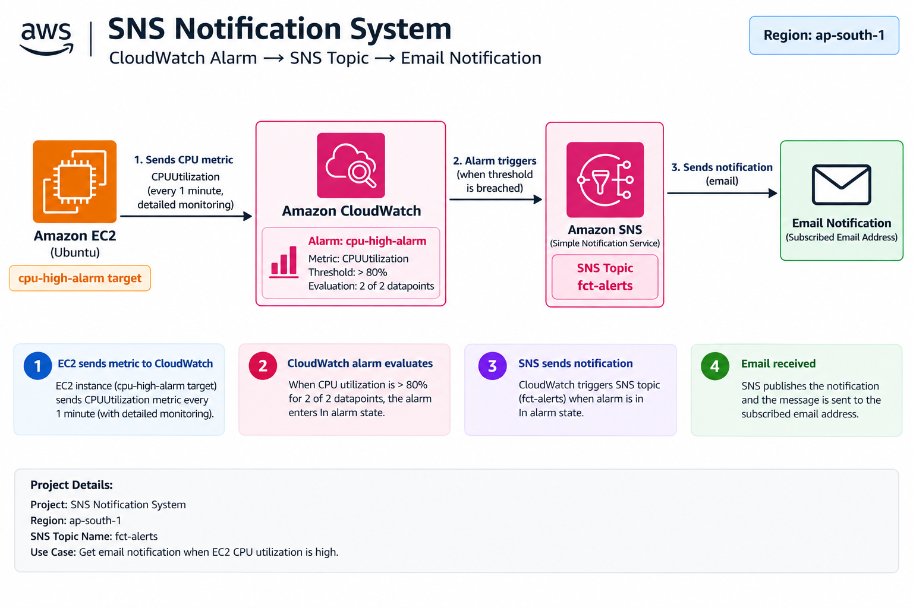
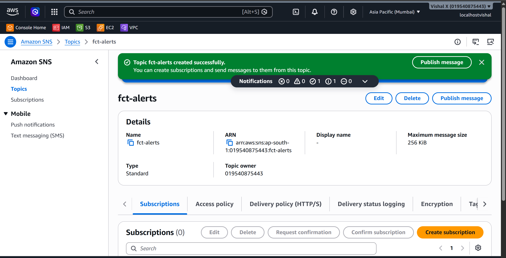
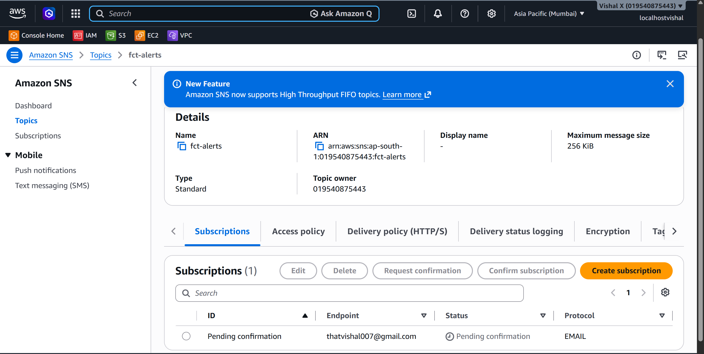
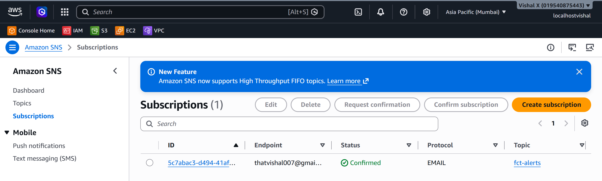
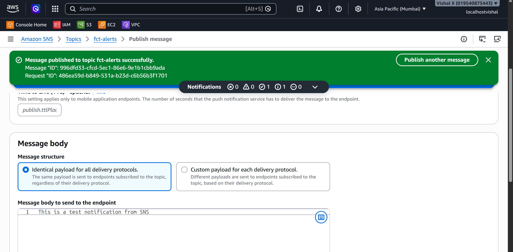
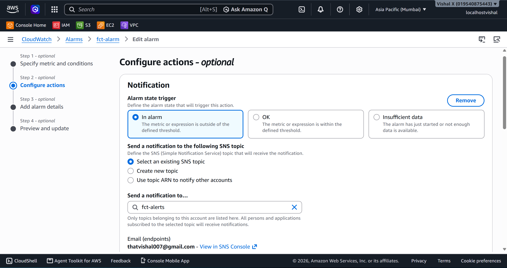
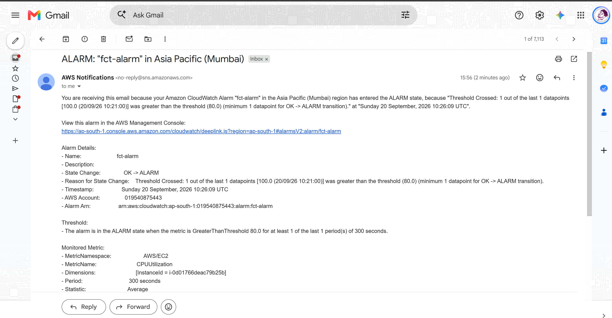

SNS Notification System
Eleventh project. Built a proper notification system using Amazon SNS — created a topic, added an email subscription, published a test message to verify delivery, then wired it to a CloudWatch alarm so the whole thing fires automatically when a condition is met.
What I built
An SNS topic with an email subscription connected to a CloudWatch alarm. When the alarm enters the In alarm state, SNS publishes a notification and the email arrives within seconds. I also published a manual test message first to confirm the subscription was working before relying on the alarm to trigger it.

Why SNS
CloudWatch can detect problems but it can't tell anyone about them on its own. SNS is the bridge — it takes an alarm state change and fans it out to whoever needs to know. One topic can notify an email address, a phone number, a Lambda function, and a webhook all at the same time. Setting this up means the system tells me when something is wrong instead of me having to watch dashboards.
Services used
| Service | What I used it for |
|---|---|
| SNS | The notification hub — receives events and fans out to subscribers |
| CloudWatch | Triggers the SNS topic when an alarm condition is met |
Resources I created
| Resource | Value |
|---|---|
| Region | ap-south-1 |
| SNS Topic Name | fct-alerts |
| SNS Topic ARN | arn:aws:sns:ap-south-1:019540875443:fct-alerts |
Steps
1. Created the SNS topic
- Open the SNS console
- In the left sidebar click Topics → Create topic
- On the Create topic page:
- Type: Standard
- Name:
fct-alerts - Leave everything else default
- Click Create topic
- On the topic detail page, copy the Topic ARN — needed when connecting to CloudWatch

2. Added an email subscription
- Still on the topic detail page, click the Subscriptions tab → Create subscription
- On the Create subscription page:
- Protocol: Email
- Endpoint: enter the email address to receive alerts
- Click Create subscription
The subscription status shows Pending confirmation. Go to the email inbox — AWS sends a confirmation email with subject AWS Notification - Subscription Confirmation. Click the Confirm subscription link inside it.
To verify: SNS → Topics → fct-alerts → Subscriptions tab — status should show Confirmed. Notifications won't be delivered until this step is done.


3. Published a test message
- SNS → Topics → click
fct-alerts - Click Publish message
- On the Publish message page:
- Subject:
Test Message - Message body:
This is a test notification from SNS. - Leave everything else default
- Click Publish message
The email arrived within a few seconds. This confirmed the subscription was working before connecting it to an alarm.

4. Connected to a CloudWatch alarm
- Open the CloudWatch console
- In the left sidebar click Alarms → All alarms
- Click the alarm name → Actions → Edit
- Click Next to reach the Configure actions step
- On the Configure actions page:
- Alarm state trigger: In alarm
- Send a notification to an SNS topic: select
fct-alerts - Click Next → Update alarm
Now when the alarm enters In alarm state, it automatically publishes to the SNS topic and delivers to all confirmed subscribers.

5. Triggered the alarm and verified the notification
SSH'd into the EC2 instance and generated CPU load:
Back in the CloudWatch console: 1. Click Alarms → All alarms 2. Watched the alarm state change from OK → In alarm 3. The email notification arrived within a couple of minutes

6. Cleaned up
- SNS → Subscriptions → tick the subscription → Delete → confirm
- SNS → Topics → tick
fct-alerts→ Delete → typedelete meto confirm → Delete
Screenshots
| # | File | Description |
|---|---|---|
| 01 | screenshots/01-create-sns-topic.png |
SNS topic created |
| 02 | screenshots/02-subscription-pending.png |
Email subscription pending confirmation |
| 03 | screenshots/03-subscription-confirmed.png |
Subscription confirmed |
| 04 | screenshots/04-publish-test-message.png |
Manual test message published |
| 05 | screenshots/05-cloudwatch-alarm-connected.png |
CloudWatch alarm with SNS attached |
| 06 | screenshots/06-alarm-triggered.png |
Email notification received |
Commands
Testing
- Published a manual test message → email arrived within seconds
- Triggered a CloudWatch alarm via CPU stress test → SNS notification delivered automatically
Things that can go wrong
| Problem | What caused it | How I fixed it |
|---|---|---|
| No confirmation email | Email went to spam | Checked spam folder |
| Subscription stays Pending confirmation | Confirmation link not clicked | Clicked the link in the AWS email |
| No notification when alarm fires | SNS topic not attached to alarm | Edited the alarm and added the SNS action |
| Email arrives but alarm doesn't fire | Stress test not running long enough | Ran stress for 5 minutes, waited 2 consecutive 1-minute periods above threshold |
Security considerations
- SNS topic only delivers to confirmed subscribers
- For production, restrict who can publish to the topic using an SNS access policy
- Don't commit real email addresses to documentation
Cost
SNS email notifications are free for the first 1,000 per month. SMS notifications cost per message. Delete the topic and subscriptions after the exercise.
What I learned
- SNS is a pub/sub service — one event can notify many subscribers at once
- Subscriptions must be confirmed before they receive messages
- CloudWatch alarms integrate directly with SNS for automated alerting
- Publishing a manual test message first is the fastest way to confirm the subscription works before relying on an alarm to trigger it